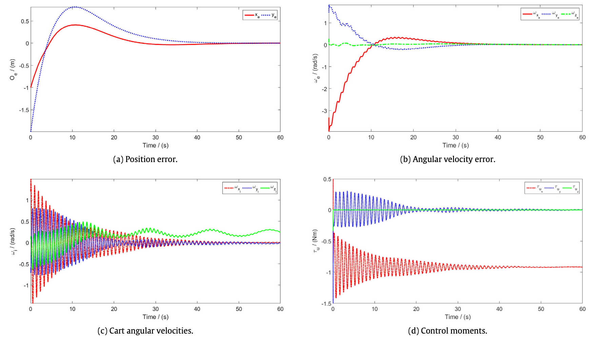

Overview
A spherical robot consists of an externally spherical rigid body rolling on a two-dimensional surface, actuated by
an auxiliary mechanism. For a class of actuation mechanisms, we derive a controller for the geometric center of
the sphere to asymptotically track any sufficiently smooth reference trajectory, with robustness to bounded,
constant uncertainties in the inertial properties of the sphere and actuation mechanism, and to constant
disturbance forces including, for example, from constant inclination of the rolling surface. The sphere and
actuator are modeled as distinct systems, coupled by reaction forces. It is assumed that the actuator can provide
three independent control torques, and that the actuator center of mass remains at a constant distance from the
geometric center of the sphere. We show that a necessary and sufficient condition for such a controller to exist
is that for any constant disturbance torque acting on the sphere there is a constant input such that the sphere
and the actuator mechanism has a stable relative equilibrium. A geometric PID controller guarantees robust,
semi-global, locally exponential stability for the position tracking error of the geometric center of the sphere,
while ensuring that actuator velocities are bounded.

Simulation results for a spherical robot actuated by an omni directional wheel driven cart.
Bibtex
@article{madhushani2017semi,
title={Semi-globally exponential trajectory tracking for a class of spherical robots},
author={Madhushani, TWU and Maithripala, DHS and Wijayakulasooriya, JV and Berg, Jordan M},
journal={Automatica},
volume={85},
pages={327--338},
year={2017},
publisher={Elsevier}
}